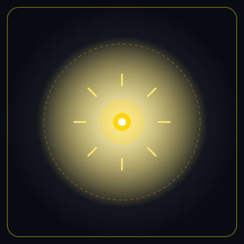

SOLAR-CORE: HELIOS
Ingeniería Solar Fotovoltaica Bifacial TopCon, Almacenamiento BESS & Arbitraje OMIE
Gemelo digital paramétrico para el diseño, dimensionamiento electroquímico y estructuración financiera de plantas fotovoltaicas con sistemas de almacenamiento (BESS). Optimiza el arbitraje diario en OMIE para erradicar el vertido de energía en horas solares valle y maximizar la rentabilidad bancable.

Propósito Operativo & Resolución Práctica
Rentabilidad bancable, almacenamiento BESS y arbitraje en el mercado eléctrico
Las plantas solares puras sufren el fenómeno de "precios cero" en horas centrales del día en OMIE y vertidos obligados de energía (curtailment), reduciendo drásticamente los ingresos previstos en los modelos financieros.
Modela el acoplamiento óptimo de baterías (BESS) para almacenar los excedentes en horas valle y despacharlos en las horas de precio punta nocturno o participar en servicios de ajuste de REE, asegurando la bancabilidad.
Planta Fuentejara (4.95 MWp + 2 MWh BESS): TIR bancable auditada del 12.4% y modelado de dispersión atmosférica de partículas PM10 para aprobación ambiental sin litigios frente a la Red Natura 2000.
Conformidad con la Ley 21/2013 de Evaluación Ambiental, directivas de integración de almacenamiento de REE y transposición horaria satelital certificada por PVGIS.
Modelado Físico & Bifacial
Cálculo del comportamiento térmico de célula y rendimiento horario:
Donde γ es el coeficiente térmico de potencia (-0.30%/°C para TopCon N-type), ϕ_bifi es el factor de bifacialidad (0.80) y G_rear la irradiancia reflejada por el suelo según el albedo del terreno medido espectrométricamente.
Planta Solar Fuentejara (4.95 MWp)
Andalucía — Proyecto con punto de conexión garantizado:
- 8.540 módulos fotovoltaicos TopCon de 580 Wp sobre seguidores solares 1-eje horizontal (1P).
- 8.420 MWh/año de energía inyectada a subestación evacuadora con pérdidas por suciedad modeladas < 2.5%.
- Buffer de exclusión >1.200 m frente a ZEPA/LIC y ausencia de servidumbres de Dominio Público Hidráulico.
Marco Legal & Bancabilidad
- Ley 21/2013 de Evaluación Ambiental: Estudio de impacto ambiental con modelado de visibilidad paisajística y corredores faunísticos.
- RD 413/2014 & RD 244/2019: Régimen de producción eléctrica de origen renovable y cumplimiento de código de red (P.O. 12.2 de REE).
- Project Finance Institucional: Modelado financiero auditado bajo estándares de la banca multilateral (P50/P90 de generación).
Edición Comunitaria (Open-Core) vs. Edición Enterprise (Project Finance & OMIE)
Modelos abiertos de balance radiativo y curvas P-V, junto a optimización bancable con arbitraje diario de baterías BESS y conexión continua a OMIE y REE.
Curvas I-V, PVGIS & Pérdidas Térmicas
Diseñada para ingenieros proyectistas, investigadores energéticos y estudiantes que precisan modelar el comportamiento óptico-eléctrico de celdas TopCon.
- Modelos Bifaciales TopCon: Balances de irradiación difusa, albedo y factor de temperatura en Python.
- Dataset Fuentejara 4.95 MWp: Series de irradiación PVGIS horaria y geometría de seguidores 1P.
- Cuadernos de Pérdidas: Degradación anual modelada y ensuciamiento (soiling) en código abierto.
- Sin arbitraje en tiempo real OMIE/REE, sin despacho automático BESS y sin modelo financiero bancable P50/P90.
Arbitraje de Baterías, Conexión OMIE/REE & Bancabilidad
Desplegada para promotores fotovoltaicos (IPPs), fondos de inversión en infraestructuras renovables y gestores de plantas con almacenamiento BESS.
- Arbitraje Diario Automatizado OMIE: Carga de baterías en horas de precio cero o negativo y venta en picos de demanda.
- Despacho BESS Multiquímica: Algoritmo de degradación electroquímica para baterías LFP/NMC con maximización del TIR (12.4%).
- Certificación Bancable P50/P90: Modelado financiero auditado para cierre de deuda con entidades financieras internacionales de primer orden.
- Cumplimiento de Red REE (P.O. 12.2): Control de potencia reactiva y telemedida oficial con SLA 99.9%.